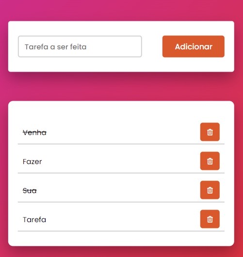

To Do List
Site dedicado a sua organização
Aqui você poderá fazer sua própria lista de afazeres.
Uma to do list é uma lista de tarefas, de coisas que precisam ser feitas. É uma forma de organizar as atividades que não podem ser esquecidas, e que não estão inseridas na nossa rotina.
É diferente de uma agenda, onde as atividades tem dia e hora para acontecer.
